Creating Metadata Schemas — A Guide for Data Stewards
Contour lets you design custom metadata schemas visually — by dragging or clicking form widgets onto a canvas — and exports them as standards-compliant SHACL shapes with DASH form annotations. The output drops straight into a FAIR Data Point or any SHACL-aware platform.
Contour's tagline: Visual schemas. Clean SHACL.
This guide is written for data stewards who want to define what metadata their community must (or may) provide for a given type of resource — a dataset, a study, a sample, a software package — without hand-writing Turtle.
No installation, no server. The editor is a single self-contained web page. Open it in Chrome or Edge (recommended, for direct file save) — Firefox and Safari work too, with a download-style save.
Table of contents
- What you are building (key concepts)
- The interface at a glance
- Tutorial: build a Dataset schema from scratch
- Step 1 — Define the schema identity
- Step 2 — Manage vocabularies (prefixes)
- Step 3 — Organise the form into groups
- Step 4 — Add your first property (a text field)
- Step 5 — Set cardinality and validation constraints
- Step 6 — Add a multi-line description
- Step 7 — Add a date property
- Step 8 — Add a controlled vocabulary (enumeration)
- Step 9 — Reference another entity (IRI + class)
- Step 10 — Model a sub-object with a nested shape
- Step 11 — Preview the data-entry form
- Step 12 — Review the generated SHACL
- Step 13 — Save and export
- Working directly with the code (the SHACL Code tab)
- Checking your work (the Issues panel)
- Power features (advanced modelling)
- Reference
- Recipes — common modelling patterns
- Tips & troubleshooting
1. What you are building (key concepts)
A metadata schema in this tool is a SHACL NodeShape: a description of what a valid record of a given kind looks like. A few terms you will meet throughout:
| Term | What it means for you |
|---|---|
| NodeShape | The schema itself — e.g. "what a Dataset record must contain". |
Target class (sh:targetClass) |
The RDF type the schema applies to, e.g. dcat:Dataset. Records of this type are validated against your schema. |
Property (sh:property) |
A single field — title, publisher, issue date, … Each property has a path, a widget, and constraints. |
Property path (sh:path) |
The RDF predicate the field writes to, e.g. dct:title. This is the actual term stored in the metadata. |
Widget (dash:editor) |
The form control shown to the person filling in metadata — a text box, a date picker, a drop-down, etc. |
Group (sh:PropertyGroup) |
A visual section that bundles related fields, e.g. "General information". |
Prefix (@prefix) |
A short alias for a vocabulary namespace, e.g. dct: → http://purl.org/dc/terms/. |
You design all of this visually; the tool writes the SHACL for you.
2. The interface at a glance
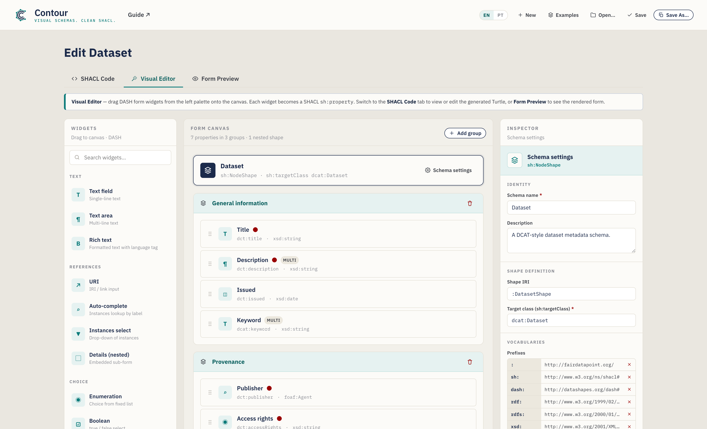
The window has three tabs:
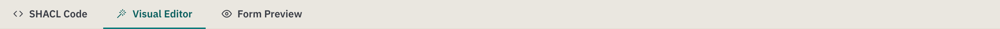
- SHACL Code — the serialized schema. Turtle by default, with autocomplete; edits sync back to the visual canvas. A syntax selector also offers N-Triples, TriG, Notation3, and a JSON-LD export. This is also where files you open are shown.
- Visual Editor — the drag-and-drop workbench (shown above). This is where most of your work happens.
- Form Preview — a realistic rendering of the data-entry form your schema produces, so you can test the experience before publishing.
The Visual Editor is split into three columns:
| Column | Purpose |
|---|---|
| Widgets (left) | The palette of form controls. Drag one onto the canvas, or just click it (keyboard: focus + Enter) to add it. |
| Form canvas (centre) | Your schema: the target banner, groups, properties, and nested shapes. |
| Inspector (right) | Settings for whatever is currently selected — the schema, a group, or a property. |
Below the workbench is an actions bar with a property/group counter, an Issues indicator (a live check of your schema — see §5), and Save / Copy buttons. To see the serialized schema, switch to the SHACL Code tab; to see the rendered form, switch to Form Preview.
The header holds the file actions — Undo / Redo, New, Recent, Examples, Open, Save, Save As — plus the language toggle and a Guide link:
Your work is saved as you go. Contour keeps an autosaved draft in your browser, so a refresh or accidental tab-close won't lose it — you'll see a "Restored your unsaved draft" notice on return. Undo/Redo (or Ctrl/Cmd+Z and Ctrl/Cmd+Shift+Z) step through your edits, and the Recent menu reopens schemas you've saved.
Interface language
Contour's interface is available in English (default) and Brazilian Portuguese. Switch with the EN / PT toggle in the header — your choice is remembered between sessions. Only the interface is translated; your schema content (names, descriptions, property paths) and the generated SHACL are never altered, so the exported Turtle is identical in either language.
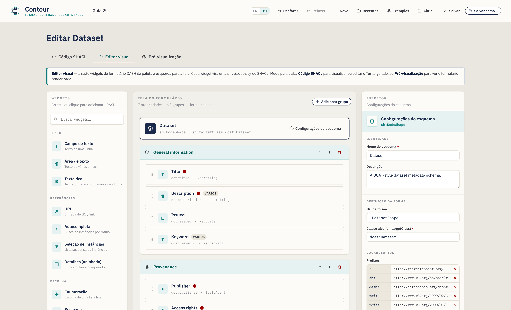
3. Tutorial: build a Dataset schema from scratch
We will build a DCAT-style Dataset metadata schema. Each step introduces one feature of the tool, and by the end you will have touched every major capability.
Contour starts blank so you can build your own schema from scratch — the page title reads New metadata schema until you name it. If you'd rather explore a finished schema, the Examples menu in the header loads ready-made templates (Dataset, Agent, Concept); the Dataset example matches what we build below:
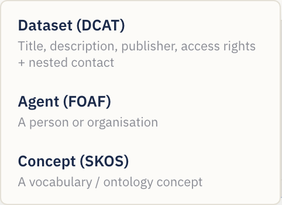
Throughout, switch to the Visual Editor tab to do the work. To begin a fresh schema at any time, use the New button.
Step 1 — Define the schema identity
Click the schema banner at the top of the canvas (it reads Untitled schema until you name it), or the Schema settings button. The Inspector switches to schema-level settings:
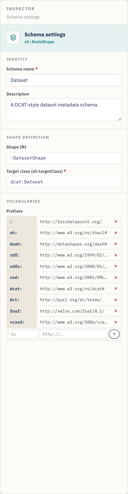
Fill in:
- Schema name — a human label, e.g.
Dataset. (Once set, the page title changes from New metadata schema to Edit Dataset; name it for any domain — an ontology class, a catalog — and the title follows.) - Description — a sentence describing the schema's purpose.
- Shape IRI — the identifier of the shape, e.g.
:DatasetShape. The leading:uses your default namespace; you can leave the suggested value. - Target class (
sh:targetClass) — the RDF class this schema validates, e.g.dcat:Dataset. This is required for the schema to be useful — it is what tells a platform "apply these rules to Dataset records".
Step 2 — Manage vocabularies (prefixes)
Still in schema settings, scroll to Vocabularies. Prefixes let you write
short terms like dct:title instead of full URLs.
The editor ships with the common ones already declared — sh, dash, rdf,
rdfs, xsd, dcat, dct, foaf, and the default empty prefix :. To add
your own (for example a domain vocabulary):
- In the empty row at the bottom of the prefix table, type the alias (e.g.
vcard) in the first box. - Type the namespace URL (e.g.
http://www.w3.org/2006/vcard/ns#) in the second box. - Press Enter or click the + button.
Remove a prefix with the × next to it. Any prefix you use in a property path or class should be declared here so the exported Turtle is valid.
Step 3 — Organise the form into groups
Groups (sh:PropertyGroup) are the sections of your form. On a blank canvas you
can simply drag your first widget onto the canvas and Contour creates the
first group for you — or click Add group (top-right of the canvas) to make an
empty section to drop into:
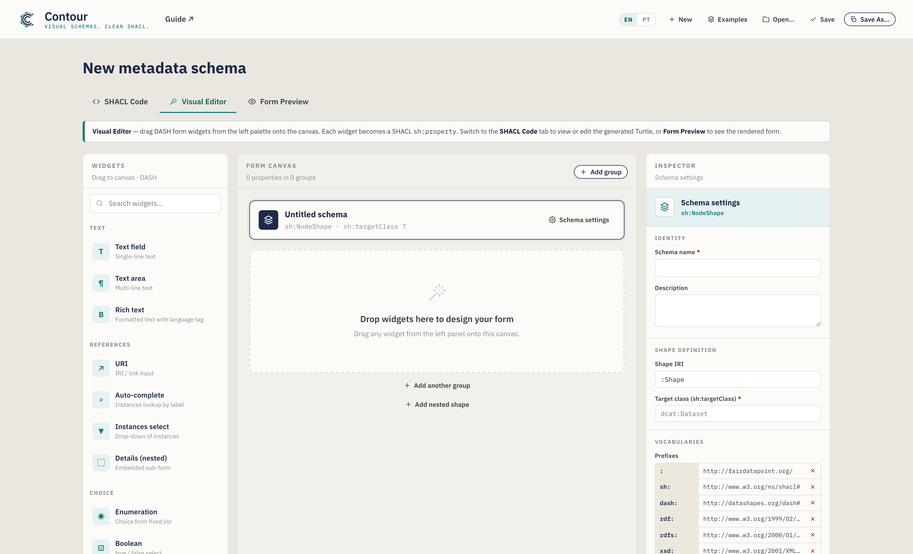
- Rename a group by clicking its title and typing — e.g.
General information. - Reorder with the ↑ / ↓ buttons on the group header (this renumbers the groups for you).
- Delete with the trash icon on the group header.
For this tutorial, create two groups: General information and Provenance.
Step 4 — Add your first property (a text field)
From the Widgets palette on the left, add a Text field to the General information group — either drag it onto the group, or simply click it (it's added to the selected group, or the last one). Keyboard users can focus a widget and press Enter. Widgets are organised by category (Text, References, Choice, Date & number) and searchable via the box at the top.
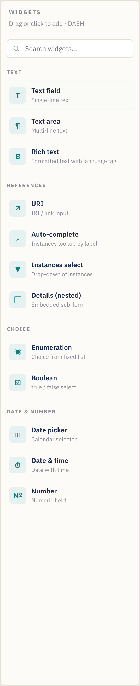
When you add a widget, it becomes a property card on the canvas and is selected automatically. A property card shows its label, path, type, and status badges (a red dot for required, a "multi" badge for repeatable):

Each card has handles to drag-reorder (the grip on the left), duplicate, and delete (the icons on the right, on hover).
With the new field selected, the Inspector shows its Property settings. Set:
- Label (
sh:name) →Title— the field label shown to users. - Description → optional help text (appears as an ⓘ tooltip on the form).
- Property path (
sh:path) →dct:title— the RDF term this field writes. Always set this; the default placeholder path is not meaningful. As you type, Contour suggests common predicates (and your declared prefixes); pick one or keep typing your own.
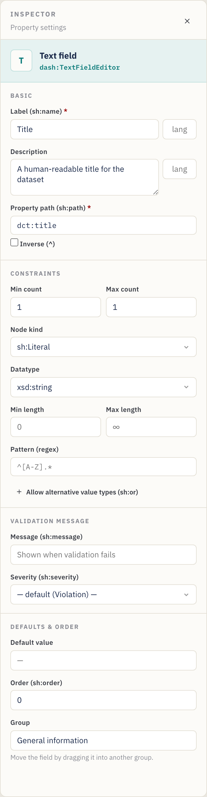
Step 5 — Set cardinality and validation constraints
The Constraints section of the Inspector controls validation. For Title:
- Min count =
1, Max count =1→ exactly one title is required. (Min count ≥ 1 makes the field required — note the red dot on the card and the red asterisk in the form preview.) - Node kind =
sh:Literal(a plain value rather than a link). - Datatype =
xsd:string. - Optionally Min/Max length and a Pattern (a regular expression, e.g.
^[A-Z].*to require an initial capital).
Cardinality cheat-sheet: Min 1 / Max 1 = required, single value. Min 0 / Max 1 = optional, single value. Min 1 / Max ∞ (leave Max empty) = required, repeatable. Min 0 / Max ∞ = optional, repeatable.
Value range (numbers and dates). Number, Date, and Date & time fields show a
Value range section — set Min (≥) / Max (≤) (inclusive) or the
(>) / (<) exclusive bounds. Numbers are written bare
(sh:minInclusive 1900), dates as typed literals ("2020-01-01"^^xsd:date).
Custom validation message (optional). The Validation message section
lets you set the text a platform shows when this field fails (sh:message) and
its Severity — Violation (default), Warning, or Info (sh:severity).
Step 6 — Add a multi-line description
Drag a Text area into General information. Set:
- Label →
Description, Path →dct:description. - Min count =
1, leave Max count empty (∞) so multiple language variants can be provided. The card now shows a multi badge, and the form preview gains a + Add button.
Step 7 — Add a date property
Drag a Date picker into General information. Set:
- Label →
Issued, Path →dct:issued. - Min count =
0, Max count =1(optional, single). - The datatype defaults to
xsd:date, which is correct for a calendar date. (Use Date & time instead if you need a timestamp —xsd:dateTime.)
Step 8 — Add a controlled vocabulary (enumeration)
Switch to the Provenance group and drag an Enumeration widget in. This
creates a drop-down restricted to a fixed list of values (sh:in).
In the Inspector, an Allowed values editor appears:
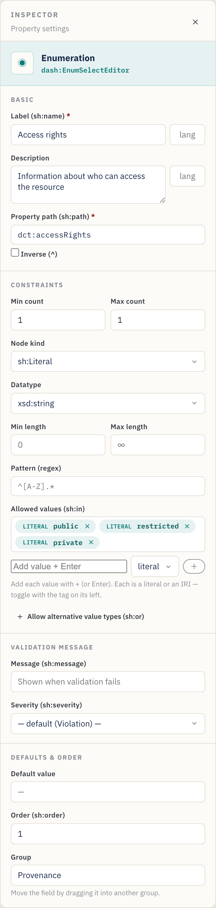
- Label →
Access rights, Path →dct:accessRights. - In Allowed values, type each option and press Enter:
public,restricted,private. Remove one with its ×. - Min/Max count
1/1to require exactly one choice.
The values are exported as sh:in ( "public" "restricted" "private" ).
Literal vs. IRI values. Each allowed value carries a literal / IRI toggle (the small tag to its left). Keep it literal for plain text like
public; switch it to IRI when the choices are controlled-vocabulary terms (e.g.ex:Public, askos:Concept) so they export as IRIs, not strings.
Step 9 — Reference another entity (IRI + class)
Some properties point to another resource rather than holding a plain value — for example the dataset's publisher is an organisation, not a string. Drag an Auto-complete widget into Provenance. This renders a search box that looks up existing instances.
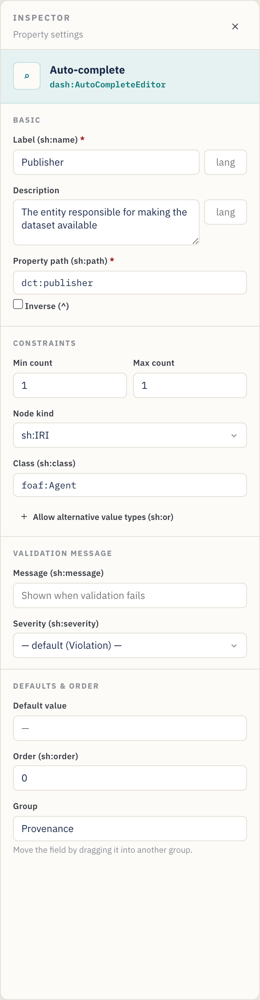
- Label →
Publisher, Path →dct:publisher. - Node kind =
sh:IRI(the value is a link/identifier). - Class (
sh:class) →foaf:Agent— restricts the picker to instances of that class. (The Class box only appears when the node kind is IRI-based.) - Min/Max count
1/1.
Other reference widgets: URI (free-form link), Instances select (a drop-down of instances). Use whichever fits how the value is chosen. The Class box suggests common classes as you type.
Advanced: a property can also accept either a literal or an IRI (and similar "one of these types" rules) via Alternative value types (
sh:or), or follow a relationship backwards with an Inverse (^) path — see §6 Power features.
Step 10 — Model a sub-object with a nested shape
Sometimes a field is itself a small structured object. A contact point, for instance, has its own name and email. Model this with a nested shape and the Details (nested) widget.
- At the bottom of the canvas, click Add nested shape. A new shape appears
under the Nested shapes divider and is selected. In the Inspector set its
Shape IRI (e.g.
:ContactShape) and optionally a Target class (e.g.vcard:Kind). Renaming the IRI automatically updates every property that references it. - Drag widgets onto the nested shape just like a group — e.g. a Text
field
Full name(vcard:fn) and a URIEmail(vcard:hasEmail). - Back in a group, add a Details (nested) widget. In its Inspector, set
Nested shape (
sh:node) to:ContactShape(the box offers your nested shapes as suggestions).
Shortcut. On a Details property you can click Create & link nested shape to mint a new shape and wire
sh:nodeto it in one step — then just add its fields. The property card shows the link it points to (e.g.→ :ContactShape), and the Issues panel flags a Details property whose target is missing.
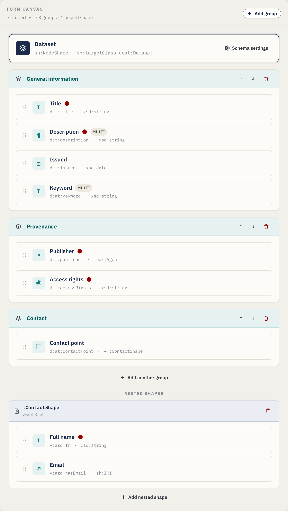
The Details property's Inspector links it to the nested shape via sh:node:
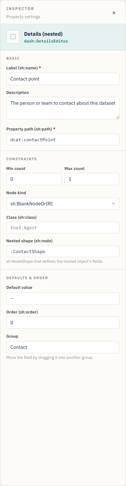
The nested shape card on the canvas holds its own properties:
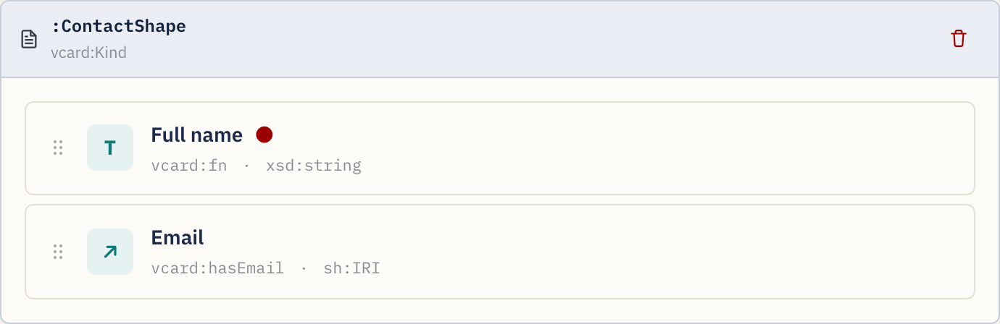
Step 11 — Preview the data-entry form
At any point, open the Form Preview tab to check what the person entering
metadata will see. The preview mirrors your constraints: required fields show a
red asterisk, a small cardinality chip shows the allowed count (e.g. 1–3),
descriptions become ⓘ tooltips, repeatable fields get + Add buttons,
patterns / lengths / ranges are applied to the inputs, language-tagged text
gets a small language box, any validation message appears under the field,
and Details properties render their nested shape's fields inline — nesting
to any depth:
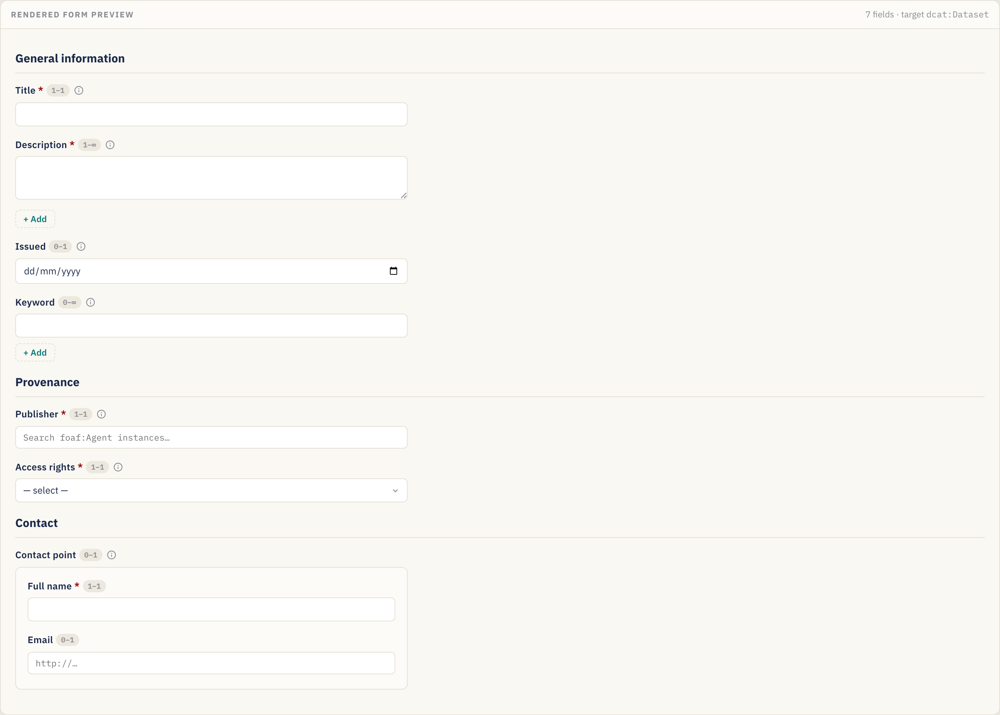
This preview is read-only — it is there to validate the design, not to capture real data.
Step 12 — Review the generated SHACL
The SHACL Code tab shows the Turtle generated from your design (and lets you edit it directly):
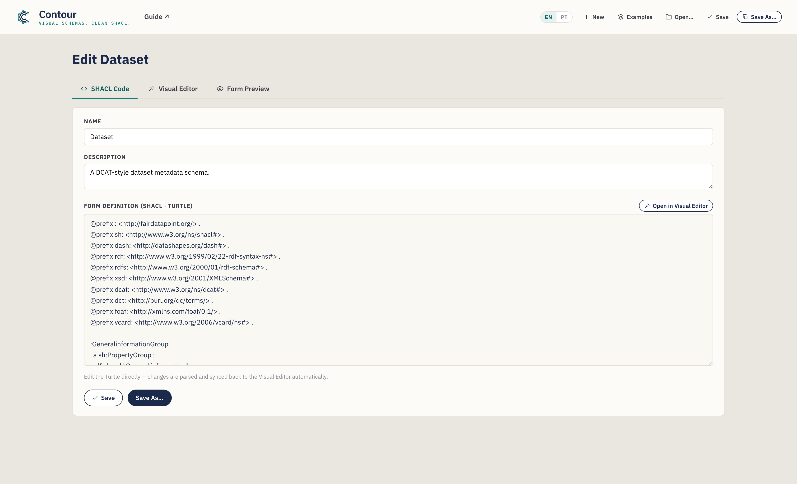
Everything you configured visually is here — @prefix declarations, the
PropertyGroups, the NodeShape with its sh:property blocks, and any nested
shapes. The Copy SHACL button in the Visual Editor's actions bar puts the
serialization on your clipboard. Use the Syntax selector to view or export
other formats, including JSON-LD (see §4).
Step 13 — Save and export
Save your schema (a .ttl file by default):
- Save As… — choose a new file name and location. The extension follows the
selected syntax (
.ttl,.nt,.trig,.n3, or.jsonld). - Save — write back to the file you last opened/saved (Ctrl/Cmd+S). The button briefly shows Saved! to confirm.
- Copy SHACL — copy the current serialization without saving a file.
- Recent (header) — reopen a schema you saved earlier this session.
In Chrome/Edge the file is written directly to disk. In Firefox/Safari the editor falls back to a normal download. The suggested file name is derived from the schema name (e.g.
dataset.ttl). Either way, an autosaved draft is kept in your browser between sessions.
Upload the resulting .ttl to your FAIR Data Point (or other SHACL platform) as
a metadata schema, and records of the target class will be validated — and forms
rendered — according to your design.
4. Working directly with the code (the SHACL Code tab)
Prefer to write or paste SHACL by hand, or need to start from an existing shape? Use the SHACL Code tab.
- Two-way sync. Edits to the Turtle are parsed and pushed back to the Visual Editor automatically (after you pause typing). Conversely, anything you build visually appears here.
- Context-aware autocomplete (Turtle). As you type, the editor suggests SHACL
predicates, node kinds, XSD datatypes, DASH editors, declared property groups,
and
@prefixlines. Use ↑/↓ to move, Tab/Enter to accept, Esc to dismiss.
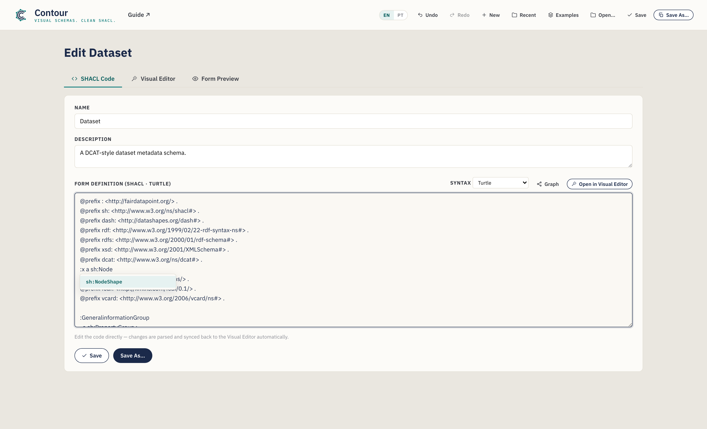
- Open an existing file. Open… in the header loads a
.ttl/.nt/.trig/.n3file into this tab, detects its syntax, and parses it into the Visual Editor — a fast way to adapt an existing schema. If a file can't be parsed, an inline message points to the problem line; you can still edit the raw text. - Name & Description for the schema also have plain inputs at the top of this tab.
Click Open in Visual Editor to jump back to the drag-and-drop view.
Choosing a syntax (and exporting JSON-LD)
A Syntax selector in this tab switches the serialization between Turtle
(default), N-Triples, TriG, Notation3, and JSON-LD (export). The
first four are fully editable — edits sync back. JSON-LD is export-only
(there's no JSON-LD parser): the editor shows it read-only so you can Copy it
or Save As a .jsonld file, then switch back to Turtle to keep editing.
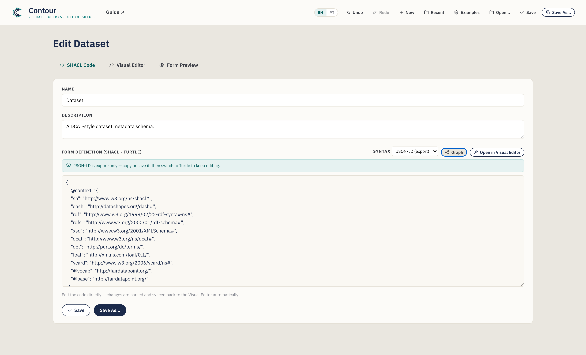
New schemas always start as Turtle, and Save As uses the extension that matches the selected syntax.
Editing an existing schema is lossless
Contour parses files with a real RDF engine, so opening, editing, and saving a
schema never silently drops the parts it doesn't visually model. Constructs
the editor doesn't have a control for — say sh:and, qualified value shapes, or
extra annotations — are preserved verbatim and re-emitted in a clearly
commented "Preserved" block at the end of the output. When a loaded file
contains such constructs you'll see a short notice in this tab; your edits to the
parts Contour does model are applied as usual, and the rest round-trips intact.
Visualize the graph
Click Graph in this tab to open a node-link visualization of the schema's
RDF in an overlay — shapes, property nodes, classes, and literals, linked by
their predicates. Scroll to zoom, drag the background to pan, and drag a node to
reposition it. Two toggles tame the detail (both on by default): Collapse
lists folds an sh:in/sh:or list into a single chip, and Hide
annotations drops labels and form hints (sh:name, dash:editor, sh:order,
…) so the structure stands out. It's a quick way to see the shape graph (and any
nested shapes or preserved constructs) at a glance.
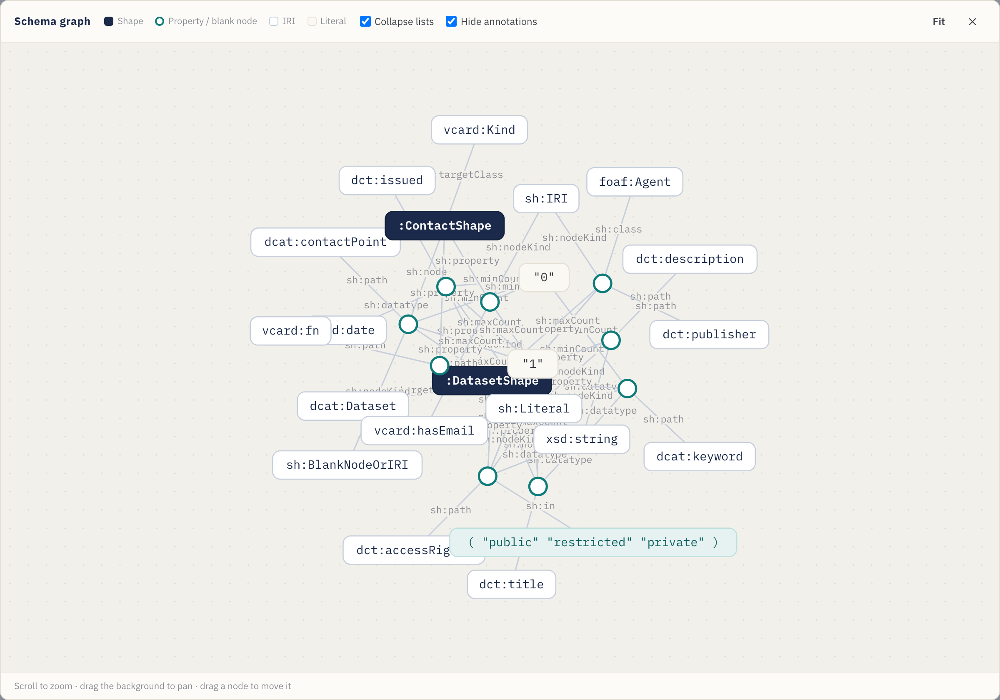
5. Checking your work (the Issues panel)
As you build, Contour continuously checks the schema and summarizes problems in the Issues indicator on the Visual Editor's actions bar. Click it to expand the list; click any item to jump straight to the offending element.
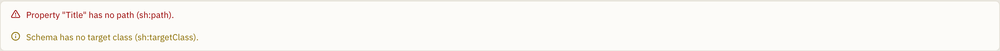
It flags things like:
- a property with no path, or duplicate paths in the same group;
- a Details property whose nested shape is missing;
- a path, class, datatype, or target class using a prefix you haven't declared;
- a missing target class or schema name;
- nested shapes with a missing or duplicate IRI.
Issues are non-blocking — they're guidance, not gates — but clearing them means the exported SHACL is well-formed and references only declared vocabularies.
6. Power features (advanced modelling)
Beyond the core widgets and constraints, the Inspector exposes a few advanced controls for richer schemas. Each is optional — reach for them when your model needs them.
Labels in multiple languages
sh:name and sh:description can carry a language tag, and you can add
translations so one field is labelled in several languages. In the Basic
section, type a tag (e.g. en) in the small box beside the label; a
translations editor then lets you add more (pt → "Título", …). Each becomes
its own language-tagged statement (sh:name "Title"@en, "Título"@pt), and the
form preview shows a language box on the field.
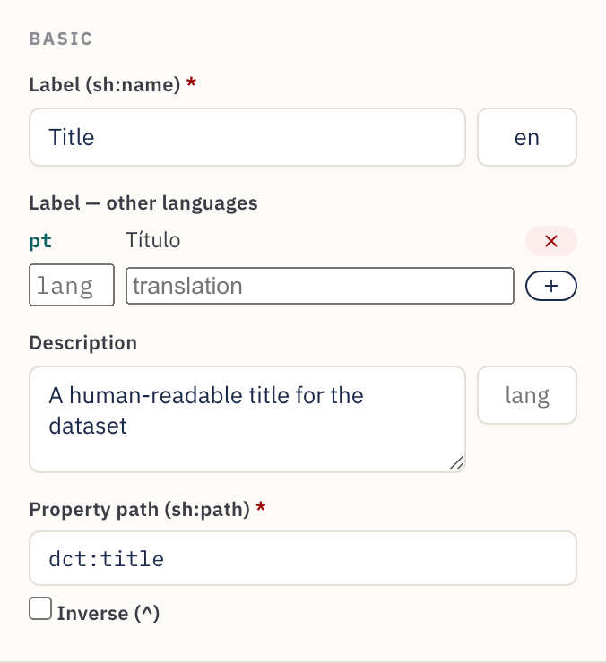
Numeric & date ranges
Number, Date, and Date & time fields show a Value range block in
Constraints. Set inclusive Min (≥) / Max (≤) or exclusive (>) /
(<) bounds — e.g. a publication year ≥ 1900. Numbers export bare
(sh:minInclusive 1900); dates as typed literals ("2000-01-01"^^xsd:date).
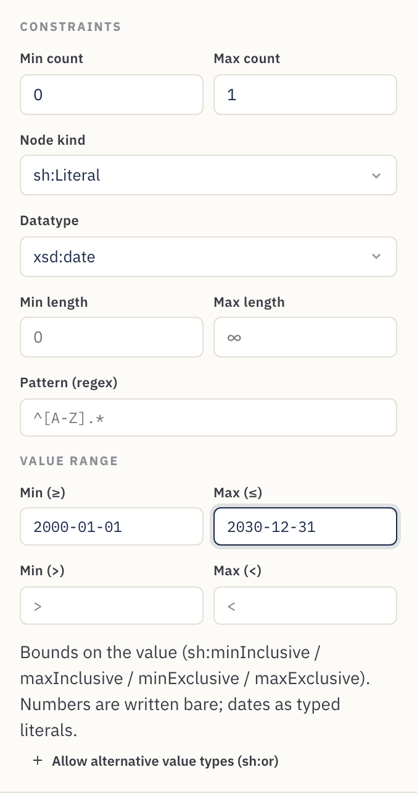
Custom validation messages
The Validation message section sets the text a platform shows when a value
fails the rule (sh:message) and its Severity — Violation (default),
Warning, or Info (sh:severity). Use it to turn a bare failure into
steward-friendly guidance.
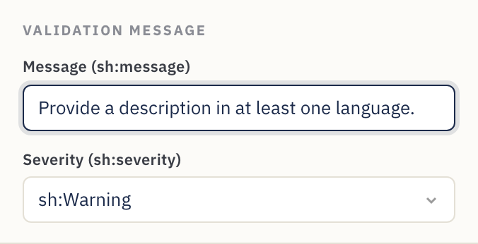
Alternative value types (literal or IRI)
Some properties legitimately accept more than one kind of value — a subject that
may be free text or a controlled-vocabulary IRI, say. Click Allow alternative
value types (sh:or) and list the branches (each a node kind, datatype, or
class). It exports as sh:or ( [ … ] [ … ] ). Richer logical shapes Contour
doesn't model are still preserved on round-trip (see
§4).
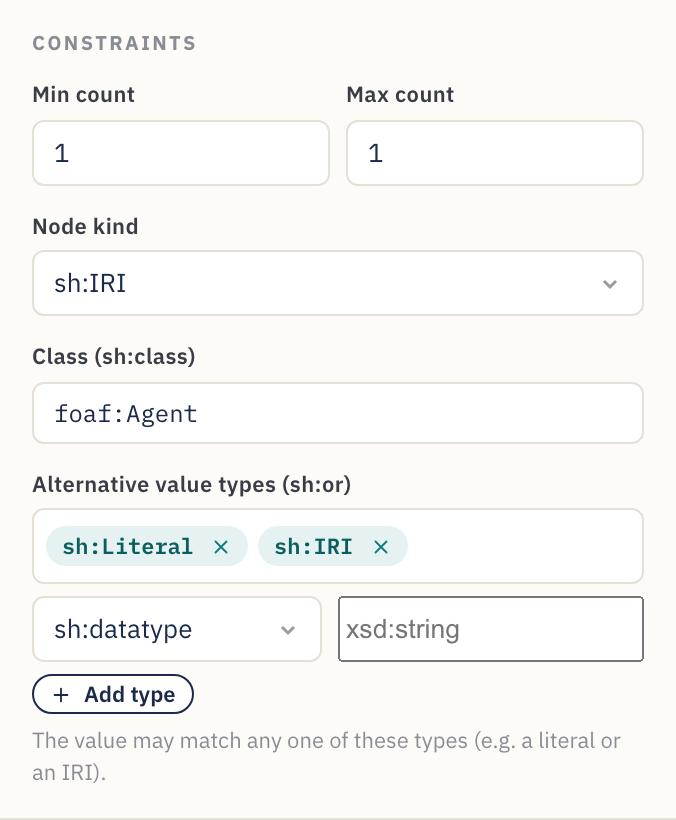
Inverse paths
Tick Inverse (^) next to the property path to match a relationship
backwards — "resources that point at this one" rather than the other way
round. It exports as sh:path [ sh:inversePath … ], and the property card shows
the path with a leading ^.
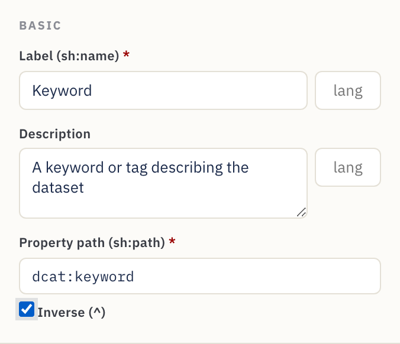
7. Reference
Widget catalogue
Every widget maps to a DASH editor and sensible default node kind / datatype.
| Widget | DASH editor | Typical use | Defaults |
|---|---|---|---|
| Text field | dash:TextFieldEditor |
Single-line text | sh:Literal, xsd:string |
| Text area | dash:TextAreaEditor |
Multi-line text | sh:Literal, xsd:string |
| Rich text | dash:RichTextEditor |
Formatted text with language tag | sh:Literal, rdf:HTML |
| URI | dash:URIEditor |
Free-form link / IRI | sh:IRI |
| Auto-complete | dash:AutoCompleteEditor |
Look up an instance by label | sh:IRI, sh:class foaf:Agent |
| Instances select | dash:InstancesSelectEditor |
Drop-down of instances | sh:IRI |
| Details (nested) | dash:DetailsEditor |
Embedded sub-form via a nested shape | sh:BlankNodeOrIRI |
| Enumeration | dash:EnumSelectEditor |
Choice from a fixed sh:in list |
sh:Literal, xsd:string |
| Boolean | dash:BooleanSelectEditor |
true / false | sh:Literal, xsd:boolean |
| Date picker | dash:DatePickerEditor |
Calendar date | sh:Literal, xsd:date |
| Date & time | dash:DateTimePickerEditor |
Timestamp | sh:Literal, xsd:dateTime |
| Number | dash:NumberFieldEditor |
Numeric value | sh:Literal, xsd:integer |
Defaults are starting points — override the node kind, datatype, or class in the Inspector whenever your model needs something different.
Property settings reference
What each Inspector control writes into SHACL:
| Inspector field | SHACL output | Notes |
|---|---|---|
| Label | sh:name |
The form label. Optional language tag + additional translations emit one sh:name per language. |
| Description | sh:description |
Help text / ⓘ tooltip. Also language-taggable, with translations. |
| Property path | sh:path |
Required. The RDF predicate. Inverse (^) emits [ sh:inversePath … ]. |
| Min count | sh:minCount |
≥ 1 makes the field required. |
| Max count | sh:maxCount |
Empty = unbounded (repeatable). |
| Node kind | sh:nodeKind |
sh:Literal, sh:IRI, sh:BlankNode, or combinations. |
| Datatype | sh:datatype |
Shown for literal node kinds. |
| Class | sh:class |
Shown for IRI node kinds; restricts the target type. |
| Nested shape | sh:node |
Shown for Details; links to a nested shape. |
| Min / Max length | sh:minLength / sh:maxLength |
Literals only. |
| Value range | sh:minInclusive / maxInclusive / minExclusive / maxExclusive |
Numbers & dates. |
| Pattern (regex) | sh:pattern |
Literals only. |
| Allowed values | sh:in ( … ) |
Enumeration choices; each value literal or IRI. |
| Alternative value types | sh:or ( … ) |
"Accept one of these types" (e.g. literal or IRI). |
| Message / Severity | sh:message / sh:severity |
Custom validation text + Violation / Warning / Info. |
| Default value | sh:defaultValue |
Pre-filled value. |
| Order | sh:order |
Field order within its group. |
Schema- and group-level controls:
| Control | SHACL output |
|---|---|
| Schema name | rdfs:label on the NodeShape |
| Shape IRI | the NodeShape subject |
| Target class | sh:targetClass |
| Prefixes | @prefix declarations |
| Group label | rdfs:label on the sh:PropertyGroup |
| Group order | sh:order on the group; field's sh:group links it |
8. Recipes — common modelling patterns
Short, self-contained patterns you can apply on top of the tutorial.
Make a field required. Set Min count to 1. The card shows a red dot and
the form marks it with *.
Allow multiple values. Leave Max count empty (∞). The card shows a multi badge and the form gains + Add.
Restrict to a fixed list. Use the Enumeration widget and fill in
Allowed values. Exports as sh:in.
Link to an organisation or person. Use Auto-complete (or Instances
select), node kind sh:IRI, and Class = foaf:Agent (or your chosen
class).
Capture a structured sub-object (address, contact point, distribution).
Create a nested shape, add its fields, then point a Details (nested)
property at it via sh:node. See Step 10.
Enforce a format. For literals, set a Pattern (regex) and/or Min/Max length — e.g. an ORCID pattern, or a max length on a code field.
Bound a number or date. On a Number / Date field, use the Value range
section — e.g. Min (≥) 1900 for a year, or Max (≤) a cut-off date.
Offer a label in several languages. Set a language tag on the Label
(e.g. en) and add translations (pt → "Título", …). Each becomes a
language-tagged sh:name, and the form preview shows a language box.
Accept a literal or an IRI (or "one of these types"). Use Alternative
value types (sh:or) on the property and list the branches (e.g.
sh:nodeKind sh:Literal and sh:nodeKind sh:IRI). Common in DCAT-AP for values
that may be inline text or a reference.
Follow a relationship backwards. Tick Inverse (^) on the path to match
"things that point at this resource" (e.g. members of a collection) — exported
as [ sh:inversePath … ].
Explain a validation rule. Fill the Validation message with steward- friendly text and pick a Severity so a platform can show a helpful Warning instead of a bare failure.
Export to JSON-LD. In the SHACL Code tab, set Syntax → JSON-LD
(export) and Copy or Save As .jsonld for tools that consume JSON-LD.
Start from an example. Use the Examples menu to load a Dataset (DCAT), Agent (FOAF), or Concept (SKOS) template, then adapt it to your needs.
Reuse an existing schema. Open… the existing file, adapt it in the Visual Editor, then Save As… a new file — anything Contour doesn't model is preserved (see §4).
9. Tips & troubleshooting
- Always set the property path. New widgets get a placeholder path like
:textfield; replace it with the real RDF term (dct:title,dcat:theme, …) or the exported metadata won't use the term you intend. - Declare the prefixes you use. If a path or class uses an alias (e.g.
vcard:), add it under Vocabularies so the Turtle is valid. - A field went to the wrong group. Drag the property card into the correct group; the Group box in the Inspector is read-only and reflects the move.
- SHACL Code edits didn't sync. Syncing happens shortly after you stop typing. If a parse error is shown (with a line number), fix the Turtle — the visual canvas keeps the last valid state until the text parses.
- Save button only downloads. That's the expected fallback in Firefox/Safari. For in-place saves, use a Chromium-based browser (Chrome/Edge).
- Made a mistake? Undo (Ctrl/Cmd+Z) / Redo (Ctrl/Cmd+Shift+Z) cover every edit, and your work is autosaved — a refresh restores it.
- Check the Issues panel. Before exporting, expand Issues in the actions
bar and clear any errors (empty paths, undeclared prefixes, broken
sh:node). - Editing JSON-LD? You can't — it's export-only. Switch Syntax back to Turtle (or N-Triples / TriG / N3) to keep editing.
- Start over. Use the New button for a blank schema, load one from Examples, or Open… an existing file.
Built with Contour for the FAIR Data Point ecosystem. Output is standard SHACL + DASH and works with any SHACL-aware tooling.